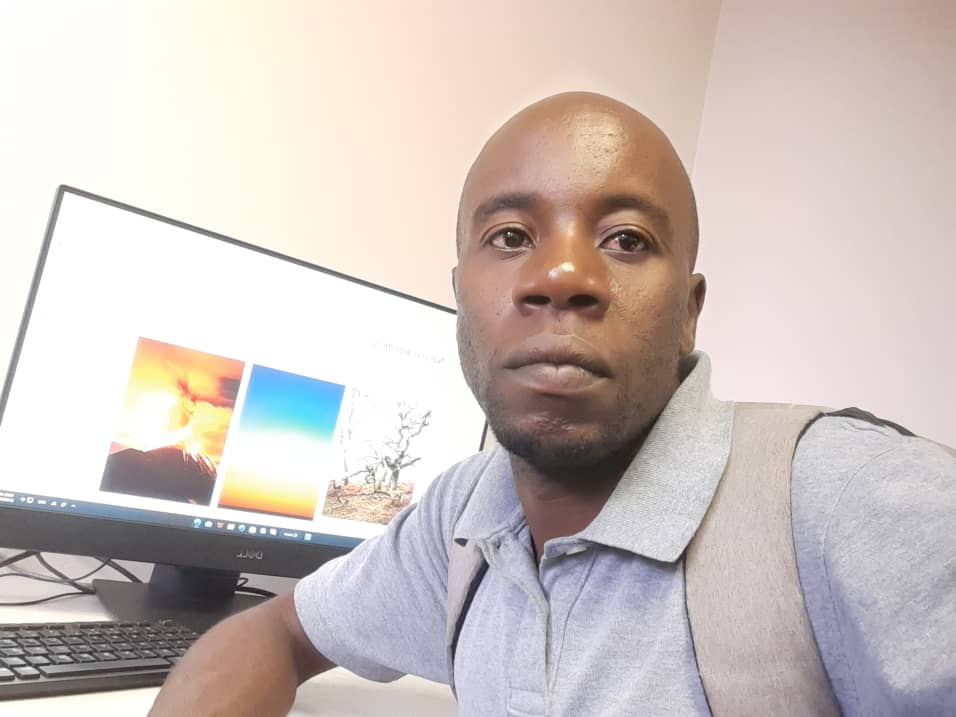

Clive Tumbare | WDD 130
I am Clive Tumbare. I am 34 years old, married, and I live in the Victoria Falls in Zimbabwe. I am a favourite fan of cricket and Austrilia is my favourite cricket team. During my free time i enjoy going some outdoor activies and watercolor painting. Another hobby of mine is playing mind games. I took up the course of programming because I enjoyed it during my college days and I wanted to have more knowledge about it. I also aim to have a profession in the future where I can apply the things that I have learned here.